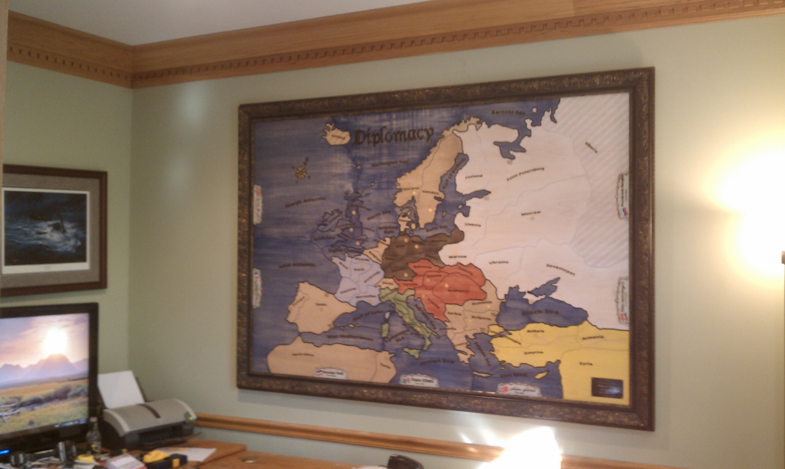
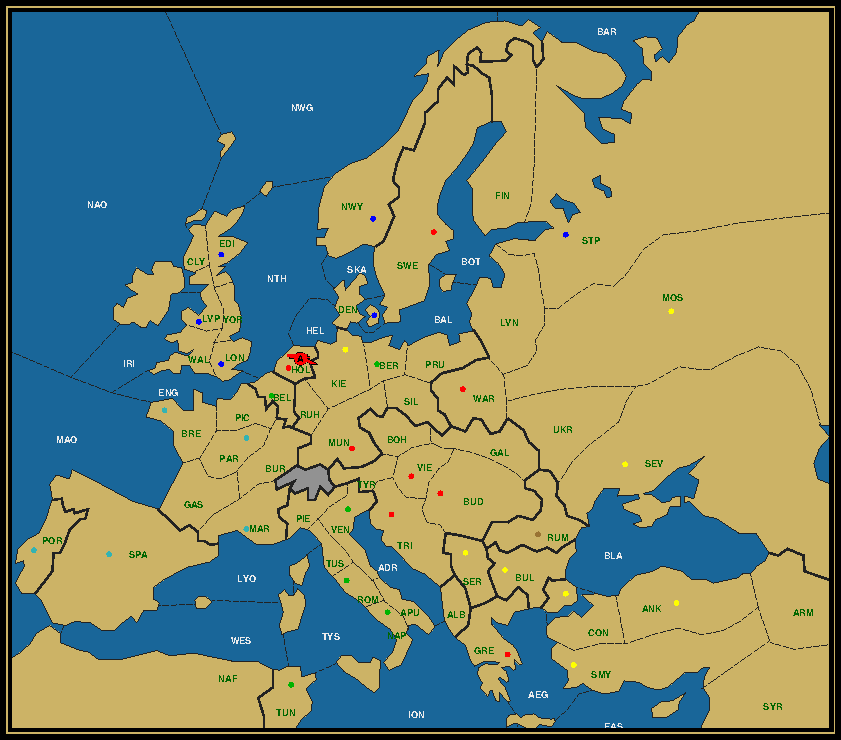

In the previous episode
Sherlock Holmes and Dr. Watson had parted in different ways. While the doctor was
accompanying Sr. Malcolm Walpole-Price to the nearest-by hospital, after the
latter had collapsed on the floor of the office in Baker Street, Holmes was heading
off to the Calhamer Club to meet up with Inspector Lestrade of Scotland Yard
and confirm his suspicions of foul play in the Last Man Standing game that had
been played there for unusually high stakes.
St. Mary's was only a mile away and at this time of the night, there was
hardly anyone on the move. We reached the hospital swiftly. With the help
of two robust male nurses the limpid body of Sir Malcolm was carried inside
onto a hospital bed. A doctor came in to check on the patient's vital
signs. After hearing the circumstances from me that had brought the patient
in this wretched state, he agreed that the cause was psychomatic and the
best remedy was complete rest away from the trappings of society. After
informing Lady Walpole-Price in Liverpool by phone, I was reassured to hear
that she would take the first train tomorrow with destination London. Leaving him
thus to the care of the nurses of St. Mary's I was now free to go down to
the Calhamer Club and assist Holmes in his investigation.
Arriving at the Club I noticed how deserted the place was. Sherlock
Holmes was in the main room in the company of Inspector Lestrade from
Scotland Yard and a third person who I recognized from his thin frame and
fuzzy hair as Baron Hervé van Rompuy-Leterme, the eminent statesman,
organizer of the ongoing Congress for Permanent Balkan Settlement and of
the Last Man Standing event of this and the previous evening. He was
wearing a black and white tuxedo, a bow tie and white hand gloves. The
giant Diplomacy board that he had brought for the demonstration, was
still standing there, but had been cleared from any markers. I feared that
Sherlock had arrived too late to confirm with his own eyes the final
position of the evening. Without knowledge of the position or identity of
the last remaining unit or the ownership of any of the centers, it seemed
that the only option left was to ask the Baron himself.

The demonstration board, now in the custody of Sir Daniel of Kenton
Inspector Lestrade confirmed as much. When he and Holmes had arrived
almost simultaneously earlier in the evening, the Baron had just finished
cleaning up the board. All guests had already left the Club, most of them
home or to their lodgings. The Russians, Turks, Austrians, Italians and
other representatives of the old and new Balkan countries, like Greece,
Rumania, Bulgaria or Hungary and Yugoslavia, had assembled again for a last
late night session to hammer out a text that would be acceptable to all
participants. The Baron was expected to join them after he had finished
cleaning up and refreshed himself, because he was the only one who enjoyed
the respect of all these nations, many of whom were still fighting each
other on the ground or were in a pecarious cease-fire in the aftermath of
the Great War.
"Mr. Holmes," the Baron had said, "your timing is inconvenient. Your
prowess in the game of Diplomacy is well known to me and I had hoped
that you would have been here this evening to be entertained by my own
little demonstration. But why did you bring an inspector of police with
you? Is he an adept of the Game himself?"
"Oh, he certainly knows his way around. Inspector Lestrade?"
The Inspector looked befumbled. "Well, you have these tiny pieces of
armies and fleets that you move around the map..."
He was quickly interrupted by the private detective. "Not the basics,
Inspector. Tell him about the Lepanto, the Sea Lion, the stalemate lines,
..."
"Well, I haven't met a sea lion yet, but I occasionally indulge in a
piece of sea chicken on my bread. And it tastes good, I can assure you."
"Mr. Holmes," the Baron said annoyed, "why have you brought this buffoon
here if not for his professional services?"
Seeing that a friendly conversation would not work, Sherlock decided to
change tactics. "Dear Lord, I have reason to believe that tonight's game
was a set-up to extract as much money as possible from the wealthy audience
that attended."
The Baron frowned his eyebrows and his pale complexion became even
paler. "You accuse me of riveting the game for my personal benefit? That
is... slander! Besides, the small percentage of the stakes that go to me
have all been donated to a public peace fund."
"Not that insignificant percentage," the detective replied undisturbed.
"I'm talking about the gains for the one or two gentlemen in the audience
who not only correctly predicted what unit ended as the Last Man Standing
and where, but also that only one neutral center would not be captured and
which center that was."
"You will have great difficulty to finger any of them. This Congress
will end tomorrow and all the participants will go home. The distribution
of the proceeds is kept a secret by the bookkeepers who can only release
such information when presented with a formal request by His Majesty's
court and that will take time. Am I right, Inspector?"
Inspector Lestrade threw his hands in the air. "Holmes, this is a wild
goose chase. It will take weeks before we get the permission. There's a lot
of protocol involved, as a good number of them is of high nobility and the
throne may be unwilling to cooperate to not provoke any unnecessary
scandals. Is there no other way?"
"There certainly is, Inspector. The previous evening had established a
pattern of staking bets patriotically, betting on units from one's own
country or even home city. Doing otherwise would unnecessarily draw
attention. We can thus limit the circle of suspects to those from the
victorious country. Which is to say, your Lordship, to the delegation from
... ?"
Baron Hervé looked back sternly. "I am in no mood to implicate
any of my diplomatic friends with your educated guesses. If you have indeed
seen through my game as you claim, prove it to me here and now. If not, I
will now leave and rejoin my colleagues."
He gestured to the big, blank board as if inviting Holmes to set it up
again as it had been earlier that evening. We stared at it and then back at
Holmes. Would he accept the challenge?
Holmes hesitated for a moment, then grabbed in the box with country
markers and started to lay them out in front of him. "My client Sir Malcolm
had informed me of a few valuable clues about the game of this evening. As
Dr. Watson can confirm, he failed however to reveal to us the nationality
or location of the remaining unit. Nonetheless the details that he provided
were sufficient for me to reconstruct the game and thus the final map,
except for one small, but important detail."
"Don't try to sway me with your bluff, Holmes," the Baron warned. "Show
us!"
"But of course." Joining the deed to the word he took a few blue markers
and placed them on Norway, Denmark and St. Petersburg. The Baron narrowed
his eyes but remained otherwise motionless. Holmes continued with the
French, Italian and Turkish markers. Slowly the board filled up, with
Russia, Germany and the neutral centers disappearing under a colorful
combination of markers. The Baron was frowning, but made no comment. Holmes
took the red markers and dropped them on the board until only Holland,
Greece and Rumania remained open. He then took out a red army piece.
"I had no problem establishing the position so far, and judging from
your Lordship's silence he is in complete agreement. That the Last Man is
red will then come as no surprise, nor that it ends here, in Holland."
He stuck the army in place and added a red marker. The Baron got up and
applauded. "I never doubted your skills, Detective Holmes, and you have not
disappointed. There's only the small matter of the identity of the red
army."
Lestrade looked from one to the other. "Well, gentlemen, if you are in
agreement, I will prepare arrest warrants for the Austrian delegation."
Holmes interrupted him. "That would be a mistake, Inspector. Remember
that after the Great War Austria-Hungary was divided in Austria and
Hungary, and many parts were annexed by other countries."
Baron Hervé continued where Holmes left off: "While the North of
the Empire became the new state of Czechoslovakia, most of the South was
annexed with the Kingdom of Serbia and Montenegro to form the Kingdom of
Yugoslavia, literally the Kingdom of Southern Slavs. The city of Trieste
however became Italian. Who then will you go and arrest, Inspector?"
The Inspector looked bedeviled. "Holmes, we're getting nowhere here. Do
you want me to arrest half of the members of the conference?"
The Baron suppressed a half smile, but my friend had still one more
trump up his sleeve. "Gentlemen, let's not bother ourselves with Trieste,"
he remarked. "The starting unit there is
a fleet, and although theoretically Austria could build an army there after
the first year, in practice there's no advantage in doing so, as it will
not lead to a solution. As for deciding between Vienna or Budapest, the
final conquered neutral center will give us the undisputable answer."
Between Greece and Rumania, which one would Holmes choose? He picked up
a red marker, took a deep breath and resolutely placed it on … Greece!
Lestrade frowned. "And how would this help us to discern between Vienna
and Budapest?"
I had asked myself the same question and had formed a small theory. This
looked like the right time to test it. "Inspector, if the unit that
captures Greece is the same unit that ends up in Holland, it most probably
is the army from Budapest.The shortest distance over land between Greece
and Holland is 6 moves, and thus requires 3 years. We know that the game
ends in 1904. Only Budapest can reach Greece by itself in the first year,
as Vienna would require 3 moves."
"Exactly," my friend added. "A convoy could shorten the time, but
convoys require fleets to hold in place. Although this puzzle has a good
number of convoys, the last unit never makes use of one, as the fleets
involved would be too hard to remove in a timely manner."
"But Mr. Holmes," the Baron argued, "for an army in Greece to reach
Holland in 6 moves, it must move through Trieste in the second year. From
Rumania it can also reach Trieste in the same time frame. And Rumania can
easily be reached from Vienna in the first year. Does that not put your
theory on very loose screws?"
"A theory? It's more than that. And here's the proof!" Holmes reached
out with his hand to the Rumanian supply center on the demonstration board
and with a single pull snatched off the dot.
"It's fake!" Lestrade and I exclaimed.
"Indeed, Inspector. Have you ever heard of the Red Speckled Hand? It's
an underground organisation that strives for the restoration of all
Hungarian lands to the Hungarian throne. They have a grudge against Rumania
for its claim on Transylvania, a territory with a large Hungarian minority.
As a sign of defiance they have created a Diplomacy board without a
neutral center in Rumania. I suspect that the Baron and the Hungarian
delegates are all part of this organisation. Your Lordship, might I ask you
to remove your gloves?"
The Baron hesitated, but after giving us a haughty look complied.
Pulling off the glove on his left hand, he revealed a series of red
speckles on the back of his hand.
"This is what we call being caught redhanded," said Inspector Lestrade.
"If you would be so kind to follow me to the Yard."
I had one last question for the Baron. "But why make common cause with
an anarchistic group? You are revered as the éminence grise
on Balkan affairs. Why favor one over all the others?"
Baron Hervé van Rompuy-Leterme grimaced. "It's not just my goal
to keep Hungary intact. It's the whole Empire of Austria-Hungary that I
wish to restore. The Powers that be have made the greatest mistake by
dissolving the Dual Monarchy, thereby creating a great vacuum in the
center of Europe. Allan Calhamer was right. The Balance of Power in Europe
requires exactly seven powers. Taking away one undermines the equilibrium.
Other powers will try to fill the void, attracted by the weakness of so
many small nations. Mark my words, before we're halfway through this
century there will be another Great War if the current situation persists.
The only way to avoid it is to revive Austria-Hungary. If people would only
open their eyes..."
As the Baron was led away, I walked around the demonstration board.
"Look, Holmes, something is written in a corner on the back of this
board."
Oh, Austria,
You have too many neighbours
And not enough friends.
Sherlock contemplated this for a moment. "It's a haiku. The Baron is
famous for composing these short Japanese style poems. They have a lot of
depth in them."
"There's also a lot of depth in your solution," I remarked. "Even with
the final board given, I can still not fathom how the game played out, or
even how you were able to come to this solution in such a very short time.
Right after Sir Malcolm described you some small aspects of the game, you
already knew the whole flow of the game. How is that possible?"
My friend laughed as he relaxed. "That's several questions at once. Let
me start with the first one: How to derive the whole game when the final
map is given. But perhaps you would like to make an attempt yourself
first?"
I had a feeling that it might come to this. Perhaps the reader can be
challenged to do the same? Here are the clues so far:

Last Man Standing Part 2, After Winter 1904
Click to enlarge in separate window
Austria (1/8) A Hol / Bud Gre Hol Mun Swe Tri Vie War
England (0/6) Den Edi Lon Lvp Nwy Stp
France (0/5) Bre Mar Par Por Spa
Italy (0/6) Bel Ber Nap Rom Tun Ven
Turkey (0/8) Ank Bul Con Kie Mos Ser Sev Smy
- All neutral centers except Rumania captured.
- Convoys in 5 consecutive seasons.
- All powers still have at least one unit in play after W1902.
|